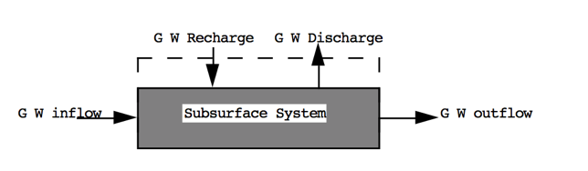

1. Introduction#
Course Website
Readings#
Chow, V.T., Maidment, D.R., Mays, L.W., 1988, Applied Hydrology: New York, McGraw-Hill. pp. 1-12
Brutsaert, W. 2005. Hydrology : An Introduction (8th printing), Cambridge University Press. NewYork.
Wisler, C.O, and Brater, E.F. 1949. “Hydrology” John Wiley and Sons, New York pp. 1-14
Wisler, C.O, and Brater, E.F. 1949. “Hydrology” John Wiley and Sons, New York pp. 198-272
Videos#
none
Course Resources#
Essential Knowledge, Skills, and Abilities for Practical Engineering Hydrology
ChatGPT 4.0 beta suggests the list below as the most important (highest probability in its database) topics in the currect practice of Hydrology and Hydraulics:
Hydrological Processes: Understanding of various hydrological processes such as precipitation, evaporation, infiltration, runoff, and groundwater flow.
Hydrological Models: Knowledge of hydrological modeling techniques including statistical methods, deterministic models, and numerical simulations.
Watershed Dynamics: Understanding of watershed characteristics, behavior, and dynamics.
Hydraulic Structures: Knowledge of design and function of hydraulic structures such as dams, weirs, culverts, channels, and stormwater management systems.
Hydrological Data Collection: Familiarity with methods for collecting and analyzing hydrological data, including gauge stations, streamflow measurements, and rainfall data.
GIS and Remote Sensing: Proficiency in Geographic Information Systems (GIS) and remote sensing techniques for spatial analysis and mapping of hydrological features.
Regulatory Requirements: Understanding of relevant regulations and guidelines governing water resources management and environmental protection.
Climate Change Impacts: Awareness of how climate change can affect hydrological processes and water resource management strategies.
Software Proficiency: Familiarity with hydrological modeling software such as HEC-HMS, HEC-RAS, SWMM, and MODFLOW.
Erosion and Sediment Transport: Knowledge of erosion processes and sediment transport mechanisms in rivers and streams.
Importance of Hydrology in Engineering#
Hydrology in civil, environmental, and water resources engineering
Role of hydrologists in design and management
The Hydrologic Cycle#
Precipitation, evaporation, infiltration, runoff, and groundwater flow
Global and regional water balance
Hydrologic Cycle#
The water, or hydrologic, cycle describes the journey of water as water molecules make their way from the Earth’s surface to the atmosphere and back again, in some cases to below the surface. This gigantic system, powered by energy from the Sun, is a continuous exchange of moisture between the oceans, the atmosphere, and the land. A typical diagram depicting the hydrologic cycle is shown below.

The driving force for the cycle is solar energy that provides the energy to vaporize liquid water that then rises into clouds, moves onshore, and rains (or snow, sleet, \(\dots\). and other forms of precipitation) A portion of the rain becomes runoff, another portion returns to the atmosphere as evaporation, another portion infiltrates into the ground and becomes groundwater.
A more detailed accounting of the precipitation is as follows:
A portion known as interception is retained on buildings, vegetation, and other surfaces that eventually evaporates - the remaining quantity is called effective precipitation
Note
Excess precipitation is a similar concept. When discussing rainfall-runoff processes using some model (i.e. unit hydrograph methods), the quantity that becomes runoff is called excess precipitation. The terms are frequently used interchangeably.
Some of the effective precipitation also evaporates directly.
Another portion of effective precipitation infiltrates into the ground - a portion of infiltrated water returns to the atmosphere via transpiration, the remainder either percolates deeper into the ground or is incorporated in the vegetative biomass.
The water that percolates deeper into the ground becomes recharge to the groundwater system, and may appear at some point as baseflow in streams.
If the precipitation exceeds the combined evaporation and infiltration puddles form in small depressions on the land surface - this is called depression storage.
After the depressions are filled they join and a continuous film of water can begin to flow over the surface to a stream channel. This portion that can flow is called the excess precipitation (see the note above), and the flow is called the direct runoff.
Runoff occurs when the film of water begins to move - water in this film is said to be in detention storage, and evaporation occurs from this compartment too. When precipitation ceases, the water in detention storage eventually joins the stream channel.
The destination of all streams is open bodies of water such as lakes, seas, and oceans which are subject to substantial evaporation.
The evaporation and tanspiration from all these sources combine and carry moisture back into the atmosphere which condenses and repeats the cycle.
Surface and Groundwater Hydrology Concepts#
What is hydrology?#
Study of the occurrence, circulation, storage, and distribution of surface and groundwater on the Earth.
Engineering hydrology is the quantification of amounts of water at various locations (spatially) as a function of time (temporally) for surface water applications.
What is a watershed (catchment)?#
Here are a couple of definitions of watersheds.
Topographic area that collects and discharges surface streamflow through one outlet or mouth (pour point)
The area on the surface of the Earth that drains to a specific location
In groundwater a similar concept is called a groundwater basin – only the boundaries can move depending on relative rates of recharge and discharge
The topographic definition omits that there could be subsurface sewer systems that can cross topographic boundaries. It’s a big deal in urban areas.
What is a hydrologic system?#
A hydrologic system is just a collection of parts that interact.
A hydrologic system is simply the collection of connected components that form the hydrologic cycle
These components can be grouped into subsystems, treated separately, and the results combined according to interactions between the subsystems (CMM pg 5)
Like in fluid mechanics, the system has boundaries (the control volume) and fluxes into/out of the boundaries.
The entire planet is usually considered a closed system (hydrologically) and only the energy fluxes cross the boundary.
At more practical scales (parking lot) the mass fluxes matter a lot.
Hydrologic Balance#
Water Budget#
The water budget, or hydrologic balance is simply the expression of the conservation of mass in hydrologic terms for a hydrologic system.
Generally it is expressed as a rate (or volume) balance.
The hydrologic equation is the fundamental tool in hydrology to describe amounts of water in storage in different compartments at different scales.
The equation expressed in “words” is
Rate of inflow - Rate of outflow = Rate of change of storage + Rate of internal mass generation.
Symbolically it is exrepssed as:
where
\(I\) is inflow volume, \(O\) is outflow volume, \(S\) is storage volume (i.e. within a watershed), and \(G\) is generated volume. \(G\) is generally zero, but is included to be consistent with the balance equations you have learned elsewhere (i.e. environmental engineering, chemistry, \(\dots\))
Surface Hydrologic System#
Here is the surface water system broken into its own sub-system.

Notice the dashed line is the boundary – exactly like a control volume in fluids.
Surface Water Budget#
From the surface water system diagram, appropriate budget components are:
Inflows: Rainfall; Surface water from outside boundary, recharge from Groundwater.
Outflows: Evapotranspiration; Surface water leaving boundary; Infiltration to groundwater.
Storage: Water levels in lakes, rivers, ponds within the boundary; water stored on leaves and other surfaces.
Sub-surface Hydrologic System#
Here is the sub-surface water system broken into its own sub-system.

Notice the dashed line is the boundary – exactly like a control volume in fluids.
Sub-surface Water Budget#
From the sub-surface water system diagram, appropriate budget components are:
Inflows: Groundwater flow from outside boundary; Recharge from surface system (via infiltration)
Outflows: Groundwater flow out of the boundary; Discharge (pumping; springs) to surface system
Storage: Water levels in aquifers within the boundary
Combined Hydrologic System#
Here are the two systems “combined.” Communication is by the two shaded paths on the figure.

Loss from the surface system becomes gain to the ground system. Loss from the ground system becomes gain to the surface system.
Water Budget Definition#
The water budget, or hydrologic balance is simply the expression of the conservation of mass in hydrologic terms for a hydrologic system.
Generally it is expressed as a rate (or volume) balance.
The hydrologic equation is the fundamental tool in hydrology to describe amounts of water in storage in different compartments at different scales.
The equation expressed in “words” is
Rate of inflow - Rate of outflow = Rate of change of storage + Rate of internal mass generation.
Symbolically it is exrepssed as:
where
\(I\) is inflow volume, \(O\) is outflow volume, \(S\) is storage volume (i.e. within a watershed), and \(G\) is generated volume. \(G\) is generally zero, but is included to be consistent with the balance equations you have learned elsewhere (i.e. environmental engineering, chemistry, \(\dots\))
Water Budget Example 1#
Consider the following problem statement:

One way to answer the questions is to decompose the problem into a simpler construct, usually by sketching a diagram as shown below:

Now we can simply assign the terms to the appropriate parts of the water balance equation and solve for unknown components such as:

For more utility we can use our Computational Thinking (ENGR-1330) skills and write a simple script to generalize the results and help with unit conversions
# Water Budget Script - Example in WebBook
P = 254 # millimeters of rainfall
ET = 85 # millimeters of evapotranspiration
I = 20 # millimeters of infiltration
DeltaS = 0 # millimeters of storage change
R = P - ET - I + DeltaS
print("Runoff = ",round(R,3),' watershed millimeters')
Runoff = 149 watershed millimeters
Now to convert to other units as requested, we simply apply conversions as:
def mm2m(mm):
# convert mm into meters
mm2m = mm/1000.0 # mm should be a float
return(mm2m)
def sqkm2sqm(sqkm):
# convert square kilometers into square meters
sqkm2sqm = sqkm * 1.0e06 # sqkm should be a float
return(sqkm2sqm)
def cum2liter(cum):
# convert cubic meters into liters
cum2liter = cum*1000.0 # cum should be a float
return(cum2liter)
# now express result in useful units
area = 65 # area in sq. kilometers
WholeWatershedRunoff = mm2m(R)*sqkm2sqm(area)
print("Runoff = ",round(WholeWatershedRunoff,3),' cubic meters')
print("Runoff = ",round(cum2liter(WholeWatershedRunoff),3),' liters')
Runoff = 9685000.0 cubic meters
Runoff = 9685000000.0 liters
Now estimate largest population this hydrology could support
# Population supported at 160 L/day
litersPerDayPerPerson = 160
litersPer2months = litersPerDayPerPerson*2*30
# Assume all Runoff is Run through kidneys and colons
maxPeople = cum2liter(WholeWatershedRunoff)/litersPer2months
print("Maximum Population = ",maxPeople," if rainfall is firm")
Maximum Population = 1008854.1666666666 if rainfall is firm
Water Budget Example 2#
Consider the following problem statement:
At a particular time the storage in a river reach is 55.3 acre-ft. At that instant, the inflow to the reach is 375 cfs and the outflow is 563 cfs. Two hours later, the inflow the inflow to the reach is 600 cfs and the outflow is 675 cfs.
Estimate:
The change in storage over 2 hours.
The reach storage after 2 hours.
Solution:
Sketch the Situation#

Governing Principles#
Apply the water balance model:
Analysis/Solution#
Observe that there is no internal mass generated, so that term will vanish. Discharge is changing over time, so we will have to choose how to cope with that, typically one chooses arithmetic means
Now we substitute into the equation and solve for the storage rate of change
Observe this is a rate! We will need to “integrate” to recover actual change
Now recover the estimated change in storage, and new storage value from the rate
A little unit conversion
Then apply definition of \(\frac{dS}{dt} \) as
So the new storage volume is
Now we can summarize the results
Value |
Amount |
Unit |
|---|---|---|
\(\Delta S\) |
-263 |
cfs-hr |
\(S_2\) |
33.57 |
acre-ft |
If we wish an ability to repeat such computations a lot (maybe we own the reach and want to charge our customers for water use) we could apply ENGR-1330 methods as below to explore different inflow and outflow conditions
# prototype function
def newS(t0,t1,I0,I1,O0,O1,S0):
Ibar = 0.5*(I0 + I1)
Obar = 0.5*(O0 + O1)
dsdt = Ibar - Obar
dsdt = dsdt*3600/43560 # convert to correct units
deltat = t1-t0
DS = dsdt*deltat
newS = S0+DS
return(newS)
# input values
t0 = 0 # hrs
t1 = 2 # hrs
I0 = 375 # cfs
I1 = 600 # cfs
O0 = 563 # cfs
O1 = 675 # cfs
S0 = 55.3 # acre-ft
# echo inputs
print("Begin Time",t0," hours")
print("End Time",t1," hours")
print("Inflow at Begin Time",I0," cfs")
print("Inflow at End Time",I1," cfs")
print("Outflow at Begin Time",O0," cfs")
print("Outflow at End Time",O1," cfs")
print("Storage at Begin Time",S0," acre-feet")
S1 = newS(t0,t1,I0,I1,O0,O1,S0) # get new storage
# output results
print("Storage at End Time",round(S1,2)," acre-feet")
Begin Time 0 hours
End Time 2 hours
Inflow at Begin Time 375 cfs
Inflow at End Time 600 cfs
Outflow at Begin Time 563 cfs
Outflow at End Time 675 cfs
Storage at Begin Time 55.3 acre-feet
Storage at End Time 33.56 acre-feet
Lab/Exercise: Simple water balance estimation using real-world data#
Exercises#
ce3354-es1-2025-2.pdf Volume units; Water budget application(s)